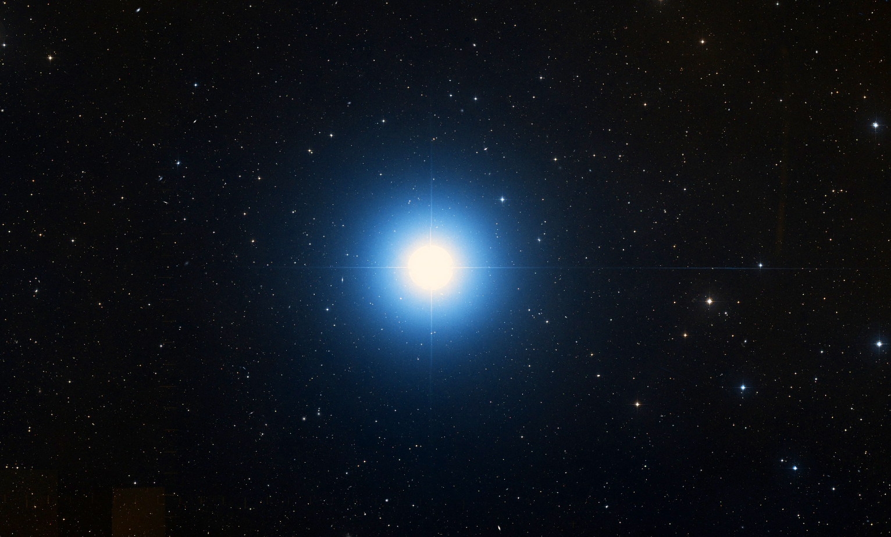

欢迎 Ciallo～(∠・ω< )⌒☆
欢迎来到Spica!这里是晨曦初阳的个人小站，会用来放置一些文章，小说，资源或者奇怪的小东西。
站名Spica来自拉丁语，意为角宿一，是全天空第十六亮的恒星，也是室女座最明亮的恒星哦~其实准确来说是两颗恒星组成的双子系统，在古时候也被称为“室女的麦穗”，是收获的象征！就让我们在过去，现在与未来，一起收获星光吧！

欢迎来到Spica!这里是晨曦初阳的个人小站，会用来放置一些文章，小说，资源或者奇怪的小东西。
站名Spica来自拉丁语，意为角宿一，是全天空第十六亮的恒星，也是室女座最明亮的恒星哦~其实准确来说是两颗恒星组成的双子系统，在古时候也被称为“室女的麦穗”，是收获的象征！就让我们在过去，现在与未来，一起收获星光吧！